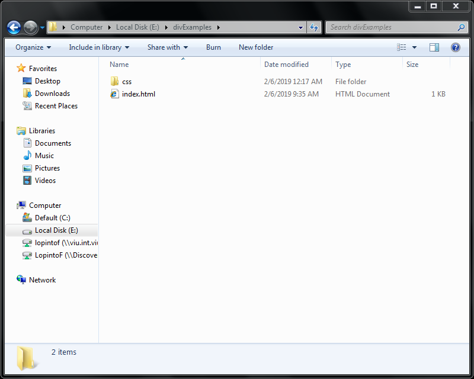
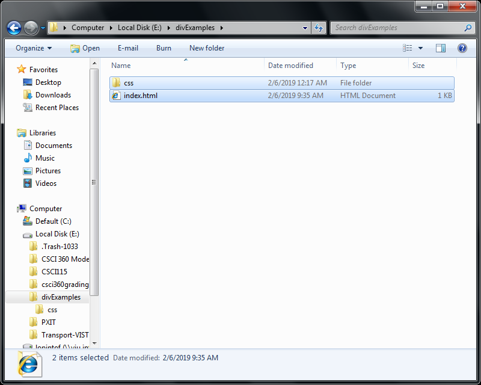
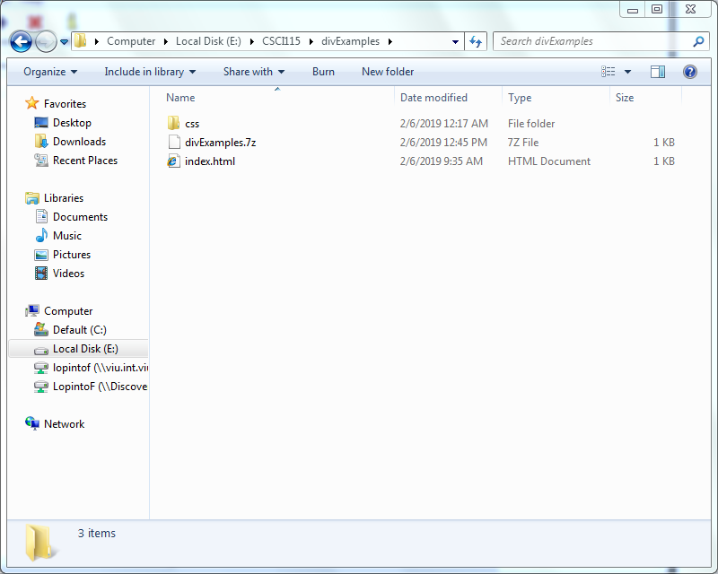
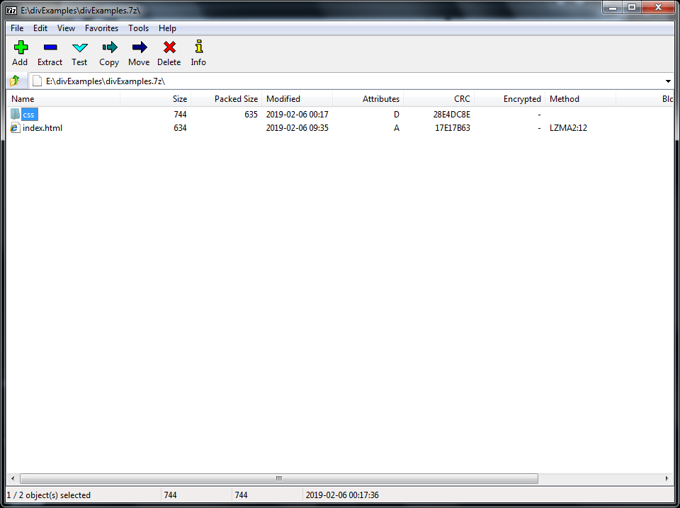

Step 1: Go to your project directory.

Step 2: Select all the files and folders needed by your page.

Step 3: Create the zip file.
Right click on any of the selected items and select 7zip. Then select "add to (your directory name).7z.
Your directory now contains a .7z file.

Step 4: Use 7zip to open the archive and view its contents.
